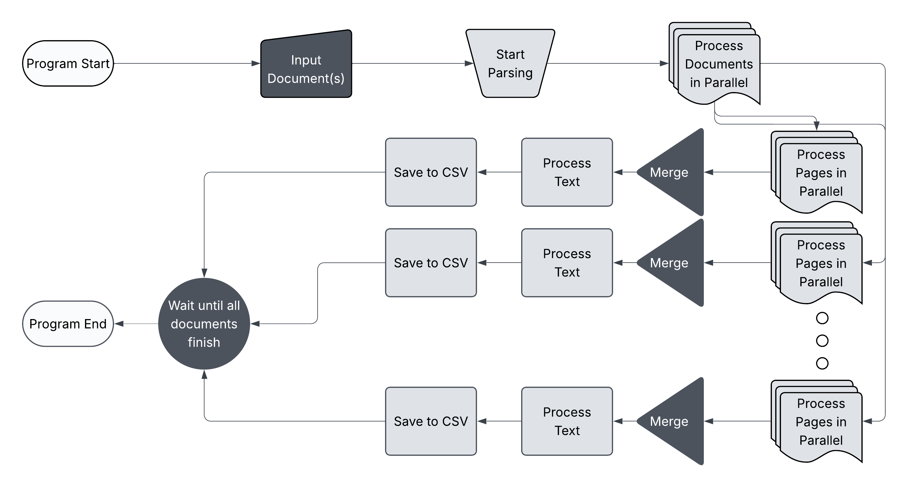

GitHub Page
Innovation plays a critical role in economic growth, and research and development (R&D) labs have historically been at the forefront of major technological advancements. However, valuable data on U.S. research and development labs from 1975-1998 contained in notable directories of the time remain largely inaccessible due to their printed format. This project aims to digitize and process these directories, transforming them into a structured, digital dataset suitable for economic data analysis.
Our solution involves developing a program based on Optical Character Recognition (OCR) to extract and clean key attributes from scanned directories, standardizing information such as lab names, locations, research fields, and parent companies. Once digitized, the data will be optimized for longitudinal analysis and integration with other datasets, enabling future research into the role of these R&D labs in innovation.
The potential impact is significant: researchers will gain access to a comprehensive dataset, allowing for new insights into the historical relationship between corporate R&D efforts and technological progress. Additionally, the project will deliver a functional data-processing tool, ensuring sustainability for future digitization efforts.
The program that we've created consists of a graphical user interface (GUI) built with Tkinter where users can upload files, select the ones they want to extract using our program and receive a structured CSV output of the PDF.
In its current state, our program doesn't handle all the entries correctly. Most entries are parsed properly but, entries that are read with inconsistent spacing, extra information, or incomplete information aren't able to extracted properly. All the information that isn't able to be parsed properly gets placed in the "miscellaneous" column.
The input documents are pre-processed using the OpenCV image processing library in which we enhance the image clarity as much as possible and draw boxes around entries so that the OCR engine is able to determine groups of text properly. The OCR Engine that we utilized is Tesseract OCR Engine as it is one of the best free, open-source OCR Engine of today. We decided to go with Tesseract because it is well known as a great OCR Engine, accessible, easy to use due to the pytesseract library, and is computationally efficient in comparison to some of the transformer based models that are out there today.
After pre-processing, files are run through Tesseract to produce blocks of raw text, each block corresponding to a single entry. These blocks are then run through our custom parser to extract fields before getting written out to a CSV file.
